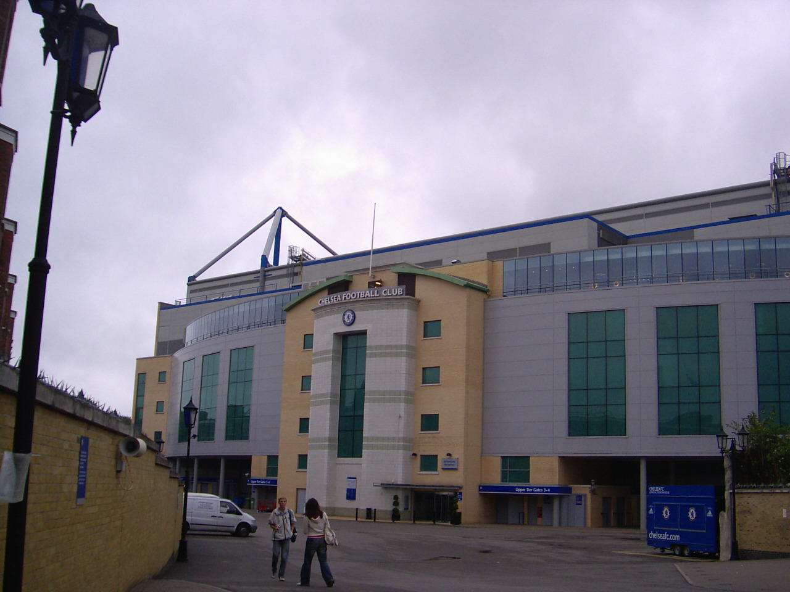
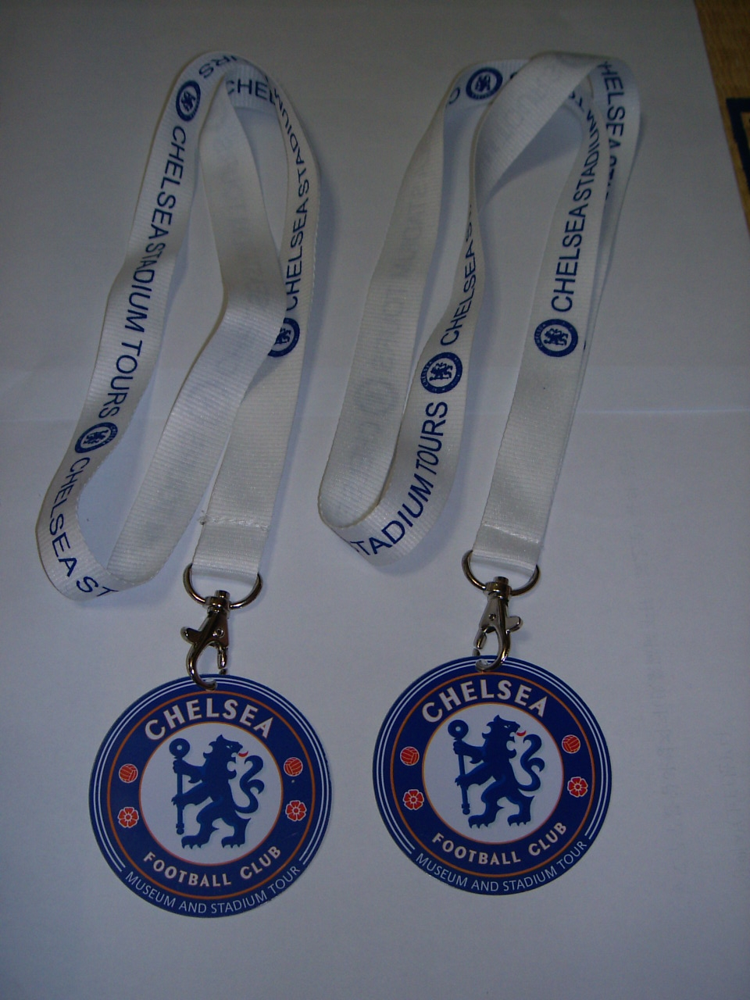
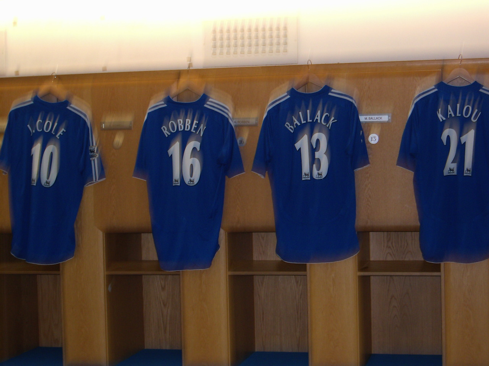
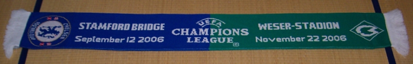
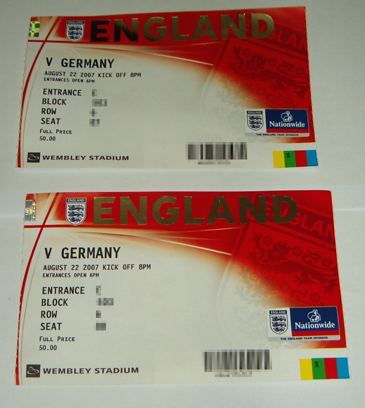

http://www.uefa.com/competitions/ucl/news/kind=1/newsid=577429.html
아무리 CL에서 어차피 만만한 팀 없다고는 하지만 분데스리가 팀들 조 편성이 이게 뭐냐 -_-;
브레멘 2시드 받았다고 좋아했더니 1시드가 레알 마드리드에 3시드가 라치오.
샬케는 더 하네. 첼시, 발렌시아와 한 조라니 이건 뭐 거의 작년 브레멘 수준.
슈투트가르트도 바르셀로나, 리옹과 한 조이니 이거야 -_-;;
+ 첼시 일정
http://www.chelseafc.com/page/NewsHomePage/0,,10268~1102695,00.html
Rosenborg - Tues 18 Sept - Home
Valencia - Wed 3 Oct - Away
Schalke 04 - Wed 24 Oct - Home
Schalke 04 - Tues 6 Nov - Away
Rosenborg - Wed 28 Nov - Away
Valencia - Tues 11 Dec - Home
+ 베르더 브레멘 일정
http://www.werder.de/aktuelles/news/meldung.php?id=11406
Dienstag, 18.09.2007, 20.45 Uhr: Real Madrid – Werder Bremen
Mittwoch, 03.10.2007, 20.45 Uhr: Werder Bremen – Olympiacos Piräus
Mittwoch, 24.10.2007, 20.45 Uhr: Werder Bremen – Lazio Rom
Dienstag, 06.11.2007, 20.45 Uhr: Lazio Rom – Werder Bremen
Mittwoch, 28.11.2007, 20.45 Uhr: Werder Bremen – Real Madrid
Dienstag, 11.12.2007, 20.45 Uhr: Olympiacos Piräus – Werder Bremen
고맙게도 개봉한단다.
현지에서의 영화 평은 그냥 좋은 정도였지만 내가 좋아하는 크리스 쿠퍼의 연기 평은 극찬일색이라.
거기다 로라 리니까지 나온다니 이 영화는 놓칠 수 없다.
[브리치] 개봉에 즈음하여 올라온 크리스 쿠퍼의 인터뷰 동영상. 말을 참 신중하게 한다.
http://www.cine21.com/Movies/Mov_Multi/vod_player.php?id=7190&type=interview
그 중 8월 22일에 스탬포드 브리지와 웸블리에 갔었다. 간단한 후기.
런던에 도착해서 숙소에 짐 풀자마자 구장 투어 예약시간 맞추느라 허겁지겁 달려갔다.
첼시의 홈 구장인 스탬포드 브리지는 아담하다.

구장 투어 입장권. 회수할 줄 알고 지레 서운해했는데 그냥 보내주어서 기뻤다.
2개인 이유는 동생과 같이 다녔기 때문.

투어는 1시간 정도 진행된다.
아줌마 한 명과 귀여운 총각 한 명이 안내하면서 재미있는 얘기를 많이 해줬는데
물론 못 알아들어서 놓친 게 더 많다.
투어 중에 찍은 첼시 라커룸.

예전에는 등번호 순으로 라커를 배당받았는데 존 테리가 주장이 되면서 바뀌었다고.
테리는 라커룸 입구를 바라보는 위치를 차지했고 그 옆은 단짝인 램파드.
대체로 국가별로 배치되어 있고,
페레이라가 이탈리아어를 할 줄 알기 때문에 셰바의 옆자리라고.
당연히 미샤 라커를 찍었지만, 사진이 흔들리고 말았다. 흑.
첼시를 거쳐간 선수들 명단.
싸인이 되어있기도 하고 없기도 한데
미샤는 싸인이 있길래 찰칵.

시간이 없어서 첼시 메가스토어는 자세히 둘러보지도 못했는데,
(뭐 비싸서 살 수도 없었지만서도)
그 와중에 눈에 번쩍 뜨인 것이 반값 세일해서 5파운드에 팔고 있는
작년 CL 첼시 vs. 베르더 브레멘 목도리.


이거 하나 얼른 사들고 웸블리로 달려갔다.
웸블리 파크 역으로 가는 전철을 타고 전철이 떠나기를 기다리고 있는데
독일 청년들이 우루루 타더니 노래와 구호를 얼마나 외쳐대는지 귀가 멍멍.
독일 선수 이름을 불러대고 독일 국가를 불러대고
영어로 노래 가사 바꿔 부르기도 하는데 대충 들어보니
"우리는 월드컵 세번 우승했다",
"너희는 유로 우승도 못 해봤지",
"지난번 웸블리 경기에서 우리가 이겼지롱"
뭐 이런 약 올리는 노래를 부르더라 ^^
재미있기도 했지만 걱정도 되었다. 경기장 분위기가 과열되어 불상사라도 일어나면 어쩌나.
잉글랜드 아저씨가 나중에 탔는데 그래도 서로 웃으며 응원을 주고 받는 걸 보고 약간 안심이 되기도 했지만.
우여곡절 끝에 손에 넣은 웸블리의 잉글랜드 vs. 독일 국가 대표 축구팀 친선 경기 입장권.
아 눈물난다.
ebay 통해서 샀는데, 원래는 타인양도가 안되는 물건이라
보안상 좌석번호는 모자이크 처리한다.

웸블리에 5시 반쯤 도착했는데 경기 시작은 8시라 저녁을 때워야했기에
매점에서 핫도그와 핫초콜렛을 사 먹었다.
그런데 그렇게 맛없는 핫초콜렛은 정말 태어나서 처음.
아니 최소한의 단맛은 있어야 할 거 아니야.
값이나 싸면 말을 안해요.
집에 와서 뉴스 사진 보니 뢰브 감독과 클린스만이 똑같은 종이컵을 들고 있던데
그게 저 핫초콜렛이었다면 안 된 일이다 -_-;
7시 반쯤 입장해보니 선수들이 몸 풀고 있더라.
망원경으로 열심히 봤다 ^^;
먼 발치이기는 하지만 좋아하는 선수들을 직접 본다는 게 정말 흐뭇했다.
독일이 부상자 투성이라 주전들이, 특히 우리가 총애하는 선수들이 대거 빠지는 바람에
아쉽기는 했지만 그래도 독일 국대에서 우리가 두번째로 예뻐하는 메르테사커가 나온 게 큰 위안이었다.
경기 시작.
축구 보는 눈이 없는 우리가 보기에도 독일이 상당히 밀렸다.
특히 전반 초반에는 하프 라인을 넘어오지를 못 하더라.
램파드에게 선제골을 내주고 나서는
젠장 그래 이 스쿼드로 이기기는 바라지 않는다 제발 다치지만 마라 이랬다.
그래도 선제골 먹고도 당황하지 않고 오히려 독일의 경기력이 나아지기 시작했던 것 같아서 기특.
결과는 쿠라니의 주워먹기(이것도 능력이다) 동점골과
판더의 멋진 중거리 골로 독일이 이겼다.
전후좌우가 모두 잉글랜드 팬인지라 대놓고 좋아하지도 못하고
끝나고 독일 선수들 인사하는데 박수도 못 쳤다 ㅜㅜ
쿠라니에게 실수로 동점골 내준 것 때문에 잉글랜드 골키퍼 로빈슨이 엄청나게 욕을 먹던데,
우리가 보기에는 그것보다도,
독일이 운이 좋은 건지 잉글랜드가 운이 없는 건지,
잉글랜드가 정말 처절할 정도로 골을 못 넣더라.
독일 쪽에서 보자면 절체절명 위기, 잉글랜드 쪽에서 보자면 절호의 기회들이 굉장히 많았는데 그걸 하나도 못 넣었으니.
독일 응원하는 우리가 보기에도 답답할 지경이었으니 잉글랜드 팬들은 정말 속 터질 듯.
루니가 돌아오면 나아질라나. 우리가 걱정해 줄 일은 아니지만.
그런데 웸블리에서 사진은 한 장도 못 찍었다.
어차피 카메라가 성능이 안 좋아서 찍어봐야 잔디만 나왔겠지만
웸블리 규정이 스타디움 안에서 카메라를 쓰면 안 된다고 엄포를 놓았기 때문.
소심해서 카메라를 꺼내지도 못 했다.
1미터 간격으로 깔려있는 보안요원들에게 카메라 뺏기기라도 할까봐 -_-;
돌아오는 길에 스타디움 바깥만 한 장 찍었다.
멋지긴 한데, 상암 월드컵 경기장보다 특별히 더 나은 건 없어보였다.
음, 좌석수는 더 많군.

* 뢰브 감독님 감기걸렸다지만 한여름에 목도리했다고 의아해할 수도 있는데, 그 날 런던 날씨는 꽤 쌀쌀했다.
+ http://www.timesonline.co.uk/tol/sport/football/premier_league/chelsea/article2260487.ece
The Times
August 15, 2007
Mourinho breathes easily as injuries begin to clear
Tom Dart
Chelsea’s injury anxieties may dissipate as quickly as they emerged. After the events of last season, it seemed improbable that José Mourinho could talk optimistically about injuries on the eve of a trip to Reading, but the Chelsea manager said yesterday that John Terry will resume full training today after his knee trouble, while Claude Makelele and Andriy Shevchenko have already done so and are available for selection for the match against Liverpool at Anfield on Sunday.
Mourinho seemed worried only about Michael Ballack, whose ankle problem will keep him on the sidelines for at least another week, and Wayne Bridge, who will be missing until October because of a hip injury.
Michael Essien, who scored the winner against Birmingham City on Sunday before damaging a knee, has a 50-50 chance of playing at the Madejski Stadium, where Petr Cech suffered a traumatic and controversial head injury last October. “I have to make a decision about Essien,” Mourinho said. “Maybe yes, maybe no. Paulo [Ferreira] is back. I hope to have everyone back for Liverpool.”
As he officially unveiled Alex, Chelsea’s latest signing, Mourinho’s thoughts centred not on the paucity of his resources but the plethora. “There is no reason to be shaky like we were last season,” he said. “We have a squad with good balance, strong in every position.” To make the point, he listed most of his players with relish.
Chelsea have four centre backs: Alex, Terry, Tal Ben Haim and Ricardo Carvalho. “Last season I was scared every time a central defender was having a tough challenge. Not now. When all of them are ready I can breathe normally,” Mourinho said.
He might be hyperventilating with excitement if Daniel Alves is signed from Seville to provide a world-class option at right back. A move appears likely because the Spanish club left him out of tonight’s Champions League tie against AEK Athens, so he will not be cup-tied if Chelsea beat Real Madrid to his signature.
“Maybe one of the reasons why we lost the championship last year was because we did not have enough defenders,” Mourinho said. “We lost [Robert] Huth and [William] Gallas in preseason, we did all season with Terry and Carvalho and a bit of [Khalid] Boulahrouz but . . . We had no other solutions.”
Alex was signed from PSV Eindhoven, where he was “parked” for three years while Chelsea waited for him to mature into a player good enough for their squad. He also had to obtain a work permit, which he finally did after a bizarre incident last month where he became so fed up with being quizzed at Heathrow by immigration officials trying to establish his employment status that he flew back to Brazil.
There is more in store for the 25-year-old because Mourinho said that Alex, who has eight Brazil caps, will not be fit enough to challenge for a starting berth for several weeks. Instead of joining up with the team in Berkshire this afternoon, he will be put through his paces in an individual session at the club’s training ground.
“He just started training a couple of days ago but he’s training hard, twice a day,” Mourinho said.
Alex arrives with a reputation for being physical. “He dominates in the air and has the physique to adapt to the English way of playing,” Mourinho said. “He plays in the most famous national team and the yellow shirt is very heavy. If he can cope with that, he can play for Chelsea.”
Teams
Tonight 8pm
Marcus Hahnemann, who excelled against Manchester United on Sunday, keeps his place in goal for Reading despite not fully recovering from a broken hand.
Reading (possible, 4-4-2): M Hahnemann - G Murty, M Duberry, I Ingimarsson, N Shorey - J Oster, J Harper, B Gunnarsson, S Hunt – S Long, K Doyle. Injuries and suspensions: L Lita (leg), G Little (Achilles), A Brown (ankle), I Sonko (cruciate), D Kitson (first of three).
Chelsea (possible, 4-4-2): P Cech - G Johnson, R Carvalho, T Ben Haim, A Cole - S Wright-Phillips, J Obi Mikel, F Lampard, F Malouda - S Kalou, D Drogba. Injuries and suspensions: W Bridge (hip), M Ballack (ankle), A Robben (knee). Referee: M Dean.
| < 이전페이지 | 다음페이지 > |